阿纳克遗迹
Lost Ruins of Arnak · 官方中文规则书全文转录
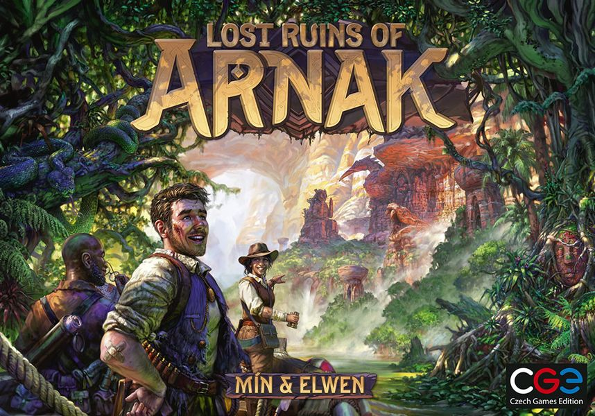
本页整理自《阿纳克遗迹》(Lost Ruins of Arnak,Mín & Elwen 设计,Czech Games Edition 出版)官方中文规则书,共 22 页正文逐页转录,并在对应章节嵌入原书扫描页供对照——点击任意扫描页即可放大查看(滚轮/双击缩放,拖动平移)。内容涵盖:游戏配件、探险日志、游戏设置(牌列/岛屿/封锁标记/研究轨/资源版图)、玩家设置、游戏目标与概述、七项主要行动(挖掘一处遗址、发现一处新遗址、击败一名守卫、购买一张卡牌、打出一张卡牌、研究、跳过)、助手、下一轮的设置、蛇之神庙变体规则、单人游戏与单人战役、附录「部分卡牌注意事项」、「别忘了!」与常见问题解答、封底速查。规则内容归版权方所有,转录仅供个人学习查阅。
整理说明:全部文字经高清原图放大逐字视觉转录,并经二次抽验复核(含组件清单、跨页页码引用、初始资源等逐项核对);图标无法以文字直接表达处以〔图标:…〕括注描述,插图与示例图以〔图注:…〕括注;原书个别排印讹误已径改并列出——第 7 页导语「戏共进行5轮。」原书漏印「游」字,改为「游戏共进行5轮。」;第 8 页主要行动列表「研究(研究(第14页)」原书重复印刷,改为「研究(第14页)」;第 13 页「神器上和物品卡的移除牌堆」改为「神器卡和物品卡的移除牌堆」;原书第 18 页为整页跨页插图,来源图集未包含该页,故原书页码自第 17 页后直接跳至第 19 页,正文引用页码(如「见第13页」)均按原书页码照录;原书对游戏内地点统一用「遗址」(仅游戏名作「遗迹」),照原书用字转录。
游戏配件
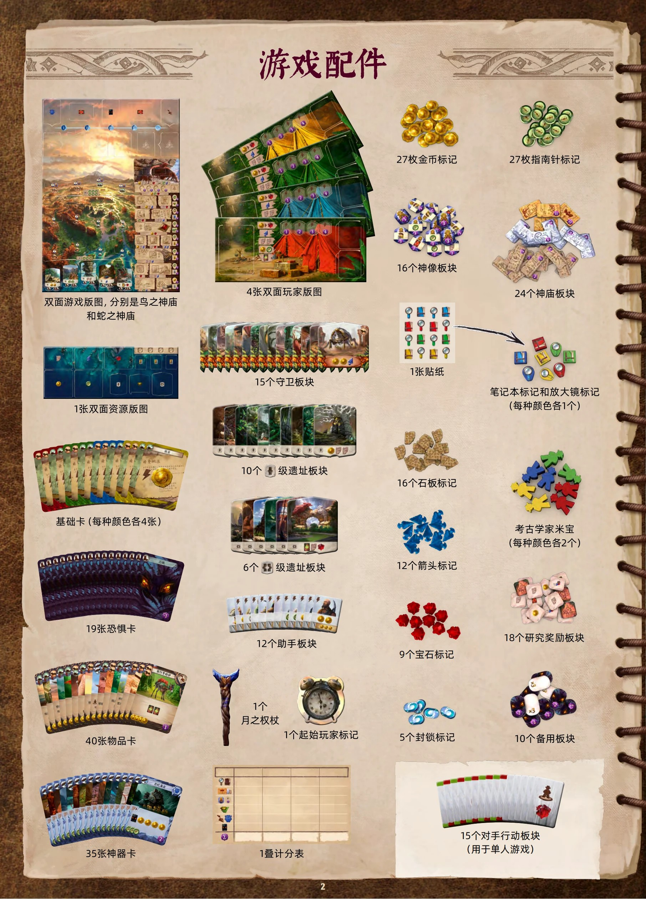
游戏配件
- 双面游戏版图,分别是鸟之神庙和蛇之神庙
- 4 张双面玩家版图
- 27 枚金币标记
- 27 枚指南针标记
- 16 个神像板块
- 24 个神庙板块
- 1 张双面资源版图
- 15 个守卫板块
- 1 张贴纸
- 笔记本标记和放大镜标记(每种颜色各 1 个)
- 基础卡(每种颜色各 4 张)
- 10 个 〔图标:1级遗址标志〕 级遗址板块
- 16 个石板标记
- 考古学家米宝(每种颜色各 2 个)
- 6 个 〔图标:2级遗址标志〕 级遗址板块
- 12 个箭头标记
- 19 张恐惧卡
- 12 个助手板块
- 9 个宝石标记
- 18 个研究奖励板块
- 40 张物品卡
- 1 个月之权杖
- 1 个起始玩家标记
- 5 个封锁标记
- 10 个备用板块
- 35 张神器卡
- 1 叠计分表
- 15 个对手行动板块(用于单人游戏)
探险日志
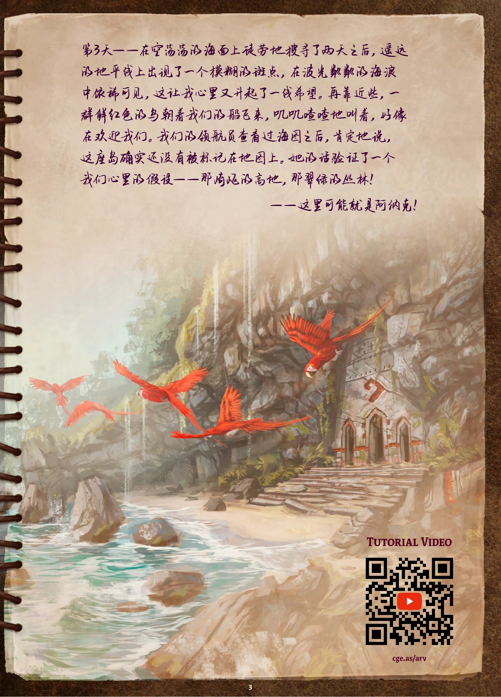
第3天——在空荡荡的海面上徒劳地搜寻了两天之后,遥远的地平线上出现了一个模糊的斑点,在波光粼粼的海浪中依稀可见,这让我心里又升起了一线希望。再靠近些,一群鲜红色的鸟朝着我们的船飞来,叽叽喳喳地叫着,好像在欢迎我们。我们的领航员查看过海图之后,肯定地说,这座岛确实还没有被标记在地图上。她的话验证了一个我们心里的假设——那隐藏的高地,那翠绿的丛林!
——这里可能就是阿纳克!
游戏设置
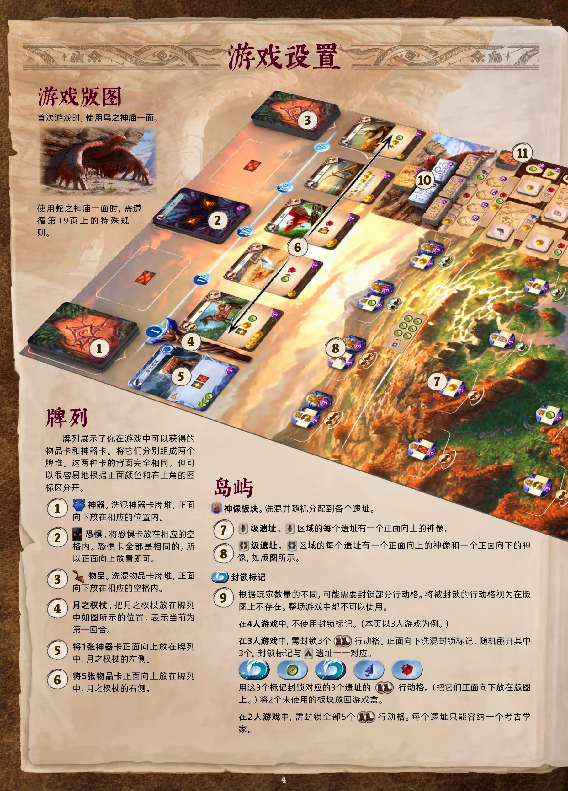
游戏版图
首次游戏时,使用鸟之神庙一面。
使用蛇之神庙一面时,需遵循第19页上的特殊规则。
〔图注:本页右侧大图为游戏版图设置示意图(鸟之神庙面),图上标有编号 1—11 的圆形标注,与左侧各设置步骤对应;牌列轨道旁另标有蓝色圆形罗马数字 Ⅰ—Ⅴ。〕
牌列
牌列展示了你在游戏中可以获得的物品卡和神器卡。将它们分别组成两个牌堆。这两种卡的背面完全相同,但可以很容易地根据正面颜色和右上角的图标区分开。
- 〔图标:蓝色双耳瓶〕神器。洗混神器卡牌堆,正面向下放在相应的位置内。
- 〔图标:黑色卡片上有两只发光的橙色眼睛〕恐惧。将恐惧卡放在相应的空格内。恐惧卡全都是相同的,所以正面向上放置即可。
- 〔图标:红色小铲〕物品。洗混物品卡牌堆,正面向下放在相应的空格内。
- 月之权杖。把月之权杖放在牌列中如图所示的位置,表示当前为第一回合。
- 将1张神器卡正面向上放在牌列中,月之权杖的左侧。
- 将5张物品卡正面向上放在牌列中,月之权杖的右侧。
岛屿
〔图标:六角形神像板块〕神像板块。洗混并随机分配到各个遗址。
- 7 〔图标:石碑状符号,内含1个竖形图案〕级遗址。〔图标:同左〕区域的每个遗址有一个正面向上的神像。
- 8 〔图标:石碑状符号,内含2个竖形图案〕级遗址。〔图标:同左〕区域的每个遗址有一个正面向上的神像和一个正面向下的神像,如版图所示。
封锁标记
〔图标:蓝色椭圆形封锁标记(白色浪花图案)〕封锁标记
- 9 根据玩家数量的不同,可能需要封锁部分行动格。将被封锁的行动格视为在版图上不存在。整场游戏中都不可以使用。
在4人游戏中,不使用封锁标记。(本页以3人游戏为例。)
在3人游戏中,需封锁3个〔图标:一双靴子〕行动格。正面向下洗混封锁标记,随机翻开其中3个。封锁标记与〔图标:遗址标志〕遗址一一对应。
〔图注:五个封锁标记实物图,图案依次为:浪花、罗盘、浪花、深蓝色锯齿状旗帜图案〔?〕、红色宝石。〕
用这3个标记封锁对应的3个遗址的〔图标:一双靴子〕行动格。(把它们正面向下放在版图上。)将2个未使用的板块放回游戏盒。
在2人游戏中,需封锁全部5个〔图标:一双靴子〕行动格。每个遗址只能容纳一个考古学家。
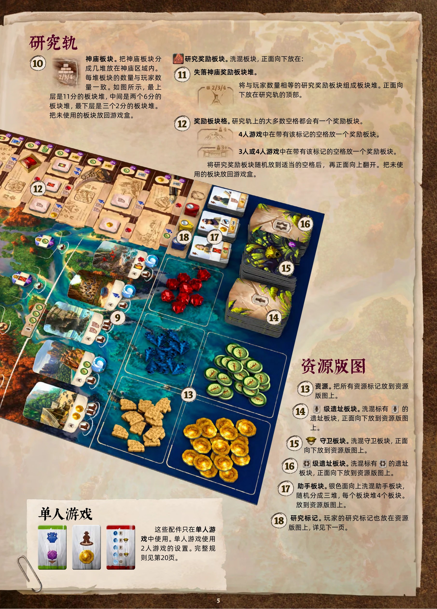
研究轨
10 〔图标:神庙板块背面,印有砖砌金字塔图案与"2/3/4"字样〕神庙板块。把神庙板块分成几堆放在神庙区域内。每堆板块的数量与玩家数量一致。如图所示,最上层是11分的板块堆,中间是两个6分的板块堆,最下层是三个2分的板块堆。把未使用的板块放回游戏盒。
〔图标:红色研究奖励板块〕研究奖励板块。洗混板块,正面向下放在:
11 失落神庙奖励板块堆。〔图标:研究轨顶部空格,印有图腾状图案与"2/3/4"字样〕将与玩家数量相等的研究奖励板块组成板块堆。正面向下放在研究轨的顶部。
12 奖励板块格。研究轨上的大多数空格都会有一个奖励板块。
- 〔图标:研究轨空格,右上角有人像标记与"4"〕4人游戏中在带有该标记的空格放一个奖励板块。
- 〔图标:研究轨空格,右上角有人像标记与"3+"〕3人或4人游戏中在带有该标记的空格放一个奖励板块。
将研究奖励板块随机放到适当的空格后,再正面向上翻开。把未使用的板块放回游戏盒。
资源版图
13 资源。把所有资源标记放到资源版图上。
14 〔图标:石板形标记,内有1个竖形小符号〕级遗址板块。洗混标有〔图标:1个竖形小符号〕的遗址板块,正面向下放到资源版图上。
15 〔图标:金色蛇首图案〕守卫板块。洗混守卫板块,正面向下放到资源版图上。
16 〔图标:石板形标记,内有2个并排竖形小符号〕级遗址板块。洗混标有〔图标:2个并排竖形小符号〕的遗址板块,正面向下放到资源版图上。
17 助手板块。银色面向上洗混助手板块,随机分成三堆,每个板块堆4个板块。放到资源版图上。
18 研究标记。玩家的研究标记也放在资源版图上,详见下一页。
单人游戏
〔图:框内为配件照片——左为印有蓝色与紫色器物图案的卡牌,中为印有助手人偶与金色圆片的卡牌,右为印有罗马数字 I–V 的红色卡牌〕
这些配件只在单人游戏中使用。单人游戏使用2人游戏的设置。完整规则见第20页。
玩家设置
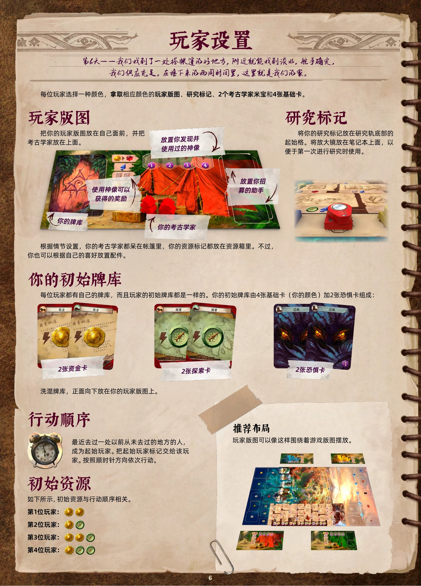
第6天——我们找到了一处搭帐篷的好地方,附近就能找到淡水。舵手确定,我们供应充足。在接下来的两周时间里,这里就是我们的家。
每位玩家选择一种颜色,拿取相应颜色的玩家版图、研究标记、2个考古学家米宝和4张基础卡。
玩家版图
把你的玩家版图放在自己面前,并把考古学家放在上面。
〔图注:玩家版图照片上的标注——放置你发现并使用过的神像 / 使用神像可以获得的奖励 / 放置你招募的助手 / 你的牌库 / 你的考古学家〕
根据情节设置,你的考古学家都呆在帐篷里,你的资源标记都放在资源箱里。不过,你也可以根据自己的喜好放置配件。
研究标记
将你的研究标记放在研究轨底部的起始格。将放大镜放在笔记本上面,以便于第一次进行研究时使用。
你的初始牌库
每位玩家都有自己的牌库,而且玩家的初始牌库都是一样的。你的初始牌库由4张基础卡(你的颜色)加2张恐惧卡组成:
〔图注:2张资金卡 / 2张探索卡 / 2张恐惧卡〕
洗混牌库,正面向下放在你的玩家版图上。
行动顺序
〔图标:闹钟〕最近去过一处以前从未去过的地方的人,成为起始玩家。把起始玩家标记交给该玩家。按照顺时针方向依次行动。
初始资源
如下所示,初始资源与行动顺序相关。
- 第1位玩家:〔金币〕〔金币〕
- 第2位玩家:〔金币〕〔指南针〕
- 第3位玩家:〔金币〕〔金币〕〔指南针〕
- 第4位玩家:〔金币〕〔指南针〕〔指南针〕
推荐布局
玩家版图可以像这样围绕着游戏版图摆放。
游戏目标
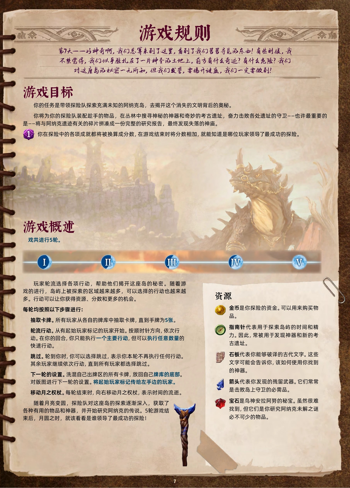
第7天——好神奇啊,我们总算来到了这里,看到了我们苦苦寻觅的东西!有些时候,我不禁觉得,我们似乎驻扎在了一片神圣的土地上。前方有什么奇迹?有什么危险?我们对这座岛的秘密一无所知,但我们发誓,要揭开谜底,我们一定要做到!
游戏目标
你的任务是带领探险队探索充满未知的阿纳克岛,去揭开这个消失的文明背后的奥秘。
你将为你的探险队装配趁手的物品,在丛林中搜寻神秘的神器和奇妙的考古遗址,奋力击败各处遗址的守卫——也许最重要的是——将与阿纳克遗迹有关的碎片拼凑成一份完整的研究报告,最终发现失落的神庙。
- 〔图标:紫色多面晶体徽章,内有数字"1"〕你在探险中的各项成就都将被换算成分数,在游戏结束时将分数相加,就能知道是哪位玩家领导了最成功的探险。
游戏概述
游戏共进行5轮。
玩家轮流选择各项行动,帮助他们揭开这座岛的秘密。随着游戏的进行,岛屿上被探索的区域越来越多,可以选择的行动也越来越多。行动可以让你获得资源、分数和更多的机会。
每轮均按照以下步骤进行:
- 抽取卡牌。所有玩家从各自的牌库中抽取卡牌,直到手牌为5张。
- 轮流行动。从有起始玩家标记的玩家开始。按顺时针方向,依次行动。在你的回合,你只能执行一个主要行动,但可以执行任意数量的快速行动。
- 跳过。轮到你时,你可以选择跳过,表示你本轮不再执行任何行动。其余玩家继续依次行动,直到所有玩家都选择跳过。
- 下一轮的设置。洗混自己出牌区的所有卡牌,放回自己牌库的底部。对版图进行下一轮的设置。将起始玩家标记传给左手边的玩家。
- 移动月之权杖。每轮结束时,向右移动月之权杖,表示时间的流逝。
随着月亮变圆,探险队对这座岛的探索逐渐深入,获取了各种有用的物品和神器,并开始研究阿纳克的传说。5轮游戏结束后,月圆之时,就该看看是谁领导了最成功的探险!
资源
- 〔图标:金币〕金币是你探险的资金。可以用来购买物品。
- 〔图标:指南针〕指南针代表用于探索岛屿的时间和精力。因此,常被用于发现神器和新的考古遗址。
- 〔图标:石板〕石板代表你能够破译的古代文字。这些文字可能会告诉你,该如何使用你找到的神器。
- 〔图标:箭头〕箭头代表你发现的残留武器。它们常常是击败岛上守卫的必需品。
- 〔图标:宝石〕宝石是鸟神安拉阿努的秘宝。虽然很难找到,但它们是你研究阿纳克未解之谜必不可少的物品。
你的回合
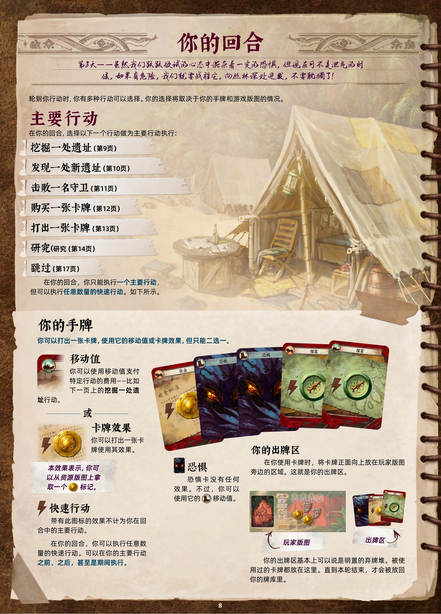
第8天——虽然我们跃跃欲试的心态中混杂着一定的恐惧,但现在可不是泄气的时候。如果有危险,我们就要战胜它。向丛林深处进发,不要耽搁了!
轮到你行动时,你有多种行动可以选择。你的选择将取决于你的手牌和游戏版图的情况。
主要行动
在你的回合,选择以下一个行动做为主要行动执行:
- 挖掘一处遗址(第9页)
- 发现一处新遗址(第10页)
- 击败一名守卫(第11页)
- 购买一张卡牌(第12页)
- 打出一张卡牌(第13页)
- 研究(第14页)
- 跳过(第17页)
在你的回合,你只能执行一个主要行动,但可以执行任意数量的快速行动。如下所示。
你的手牌
你可以打出一张卡牌,使用它的移动值或卡牌效果,但只能二选一。
移动值
你可以使用移动值支付特定行动的费用——比如下一页上的挖掘一处遗址行动。
—— 或 ——
卡牌效果
你可以打出一张卡牌使用其效果。
本效果表示,你可以从资源版图上拿取一个〔图标:金黄色八角形圆盘标记〕标记。
〔图标:闪电〕快速行动
带有此图标的效果不计为你在回合中的主要行动。
在你的回合,你可以执行任意数量的快速行动。可以在你的主要行动之前、之后,甚至是期间执行。
恐惧
恐惧卡没有任何效果。不过,你可以使用它的〔图标:靴子〕移动值。
你的出牌区
在你使用卡牌时,将卡牌正面向上放在玩家版图旁边的区域。这就是你的出牌区。
你的出牌区基本上可以说是明置的弃牌堆。被使用过的卡牌都放在这里。直到本轮结束,才会被放回你的牌库里。
挖掘一处遗址
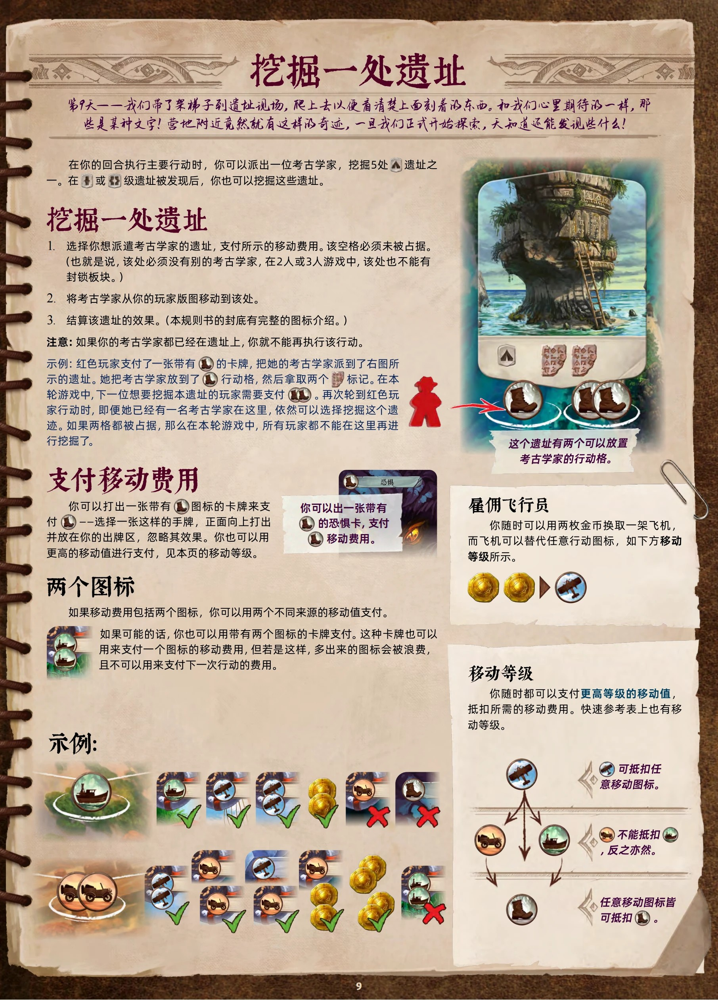
第9天——我们带了架梯子到遗址现场,爬上去以便看清楚上面刻着的东西。和我们心里期待的一样,那些是某种文字!营地附近竟然就有这样的奇迹,一旦我们正式开始探索,天知道还能发现些什么!
在你的回合执行主要行动时,你可以派出一位考古学家,挖掘5处〔图标:遗址标志〕遗址之一。在〔图标:1级标志〕或〔图标:2级标志〕级遗址被发现后,你也可以挖掘这些遗址。
挖掘一处遗址
- 选择你想派遣考古学家的遗址,支付所示的移动费用。该空格必须未被占据。(也就是说,该处必须没有别的考古学家,在2人或3人游戏中,该处也不能有封锁板块。)
- 将考古学家从你的玩家版图移动到该处。
- 结算该遗址的效果。(本规则书的封底有完整的图标介绍。)
注意:如果你的考古学家都已经在遗址上,你就不能再执行该行动。
示例:红色玩家支付了一张带有〔图标:靴子〕的卡牌,把她的考古学家派到了右图所示的遗址。她把考古学家放到了〔图标:靴子〕行动格,然后拿取两个〔图标:助手标记〕标记。在本轮游戏中,下一位想要挖掘本遗址的玩家需要支付〔图标:靴子×2〕。再次轮到红色玩家行动时,即便她已经有一名考古学家在这里,依然可以选择挖掘这个遗迹。如果两格都被占据,那么在本轮游戏中,所有玩家都不能在这里再进行挖掘了。
〔图注:插图下方说明文字:这个遗址有两个可以放置考古学家的行动格。〕
支付移动费用
你可以打出一张带有〔图标:靴子〕图标的卡牌来支付〔图标:靴子〕——选择一张这样的手牌,正面向上打出并放在你的出牌区,忽略其效果。你也可以用更高的移动值进行支付,见本页的移动等级。
你可以出一张带有〔图标:靴子〕的恐惧卡,支付〔图标:靴子〕移动费用。
两个图标
如果移动费用包括两个图标,你可以用两个不同来源的移动值支付。
如果可能的话,你也可以用带有两个图标的卡牌支付。这种卡牌也可以用来支付一个图标的移动费用,但若是这样,多出来的图标会被浪费,且不可以用来支付下一次行动的费用。
示例
〔图注:上行图组——移动费用为1个船形图标:带1个船形图标的卡牌(✓)、带1个飞机图标的卡牌(✓)、带2个飞机图标的卡牌(✓)、2枚金币(✓)、带1个吉普车图标的卡牌(✗)、带1个靴子图标的卡牌(✗)。〕
〔图注:下行图组——移动费用为2个吉普车图标:带2个飞机图标的卡牌(✓)、两张各带1个吉普车图标的卡牌(✓)、1张飞机卡与1张吉普车卡(✓)、1张吉普车卡与2枚金币(✓)、4枚金币(✓)、带2个船形图标的卡牌(✗)。〕
雇佣飞行员
你随时可以用两枚金币换取一架飞机,而飞机可以替代任意行动图标,如下方移动等级所示。
〔图标:金币×2 ▶ 飞机〕
移动等级
你随时都可以支付更高等级的移动值,抵扣所需的移动费用。快速参考表上也有移动等级。
- 〔图标:飞机〕可抵扣任意移动图标。
- 〔图标:吉普车〕不能抵扣〔图标:船〕,反之亦然。
- 任意移动图标皆可抵扣〔图标:靴子〕。
发现一处新遗址
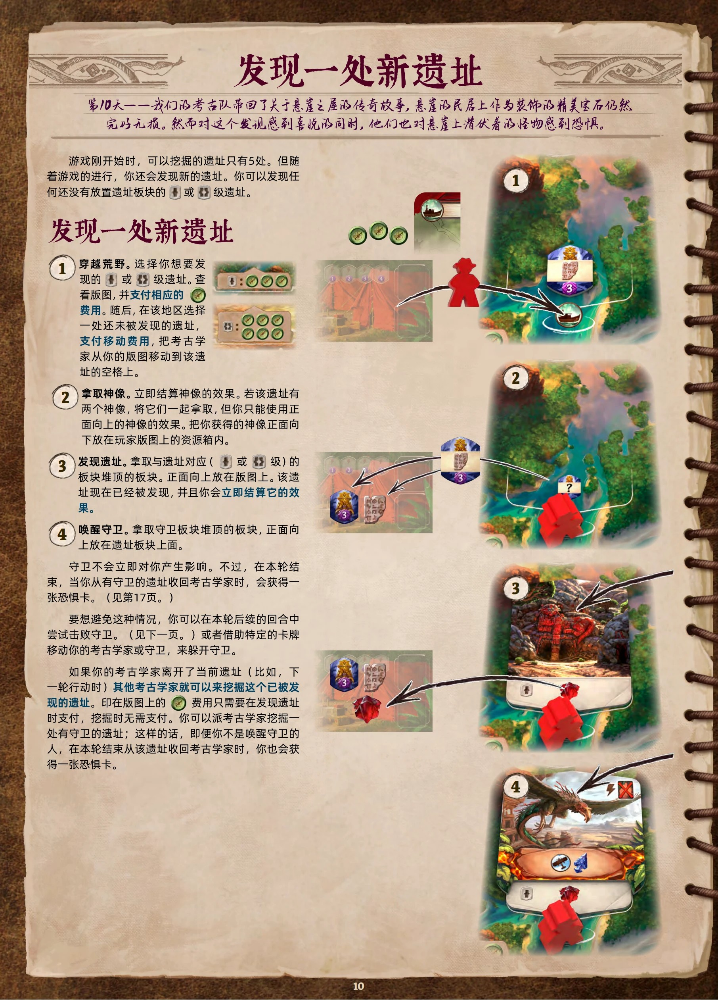
第10天——我们的考古队带回了关于悬崖之屋的传奇故事,悬崖的民居上作为装饰的精美宝石仍然完好无损。然而对这个发现感到喜悦的同时,他们也因悬崖上潜伏着的怪物感到恐惧。
游戏刚开始时,可以挖掘的遗址只有5处。但随着游戏的进行,你还会发现新的遗址。你可以发现任何还没有放置遗址板块的〔图标:1级标志〕或〔图标:2级标志〕级遗址。
发现一处新遗址
〔图注:费用示例——1级遗址:3个〔指南针〕;2级遗址:6个〔指南针〕。〕
- 穿越荒野。选择你想要发现的〔图标:1级标志〕或〔图标:2级标志〕级遗址。查看版图,并支付相应的〔图标:指南针〕费用。随后,在该地区选择一处还未被发现的遗址,支付移动费用,把考古学家从你的版图移动到该遗址的空格上。
- 拿取神像。立即结算神像的效果。若该遗址有两个神像,将它们一起拿取,但你只能使用正面向上的神像的效果。把你获得的神像正面向下放在玩家版图上的资源箱内。
- 发现遗址。拿取与遗址对应(〔图标:1级标志〕或〔图标:2级标志〕级)的板块堆顶的板块。正面向上放在版图上。该遗址现在已经被发现,并且你会立即结算它的效果。
- 唤醒守卫。拿取守卫板块堆顶的板块,正面向上放在遗址板块上面。
守卫不会立即对你产生影响。不过,在本轮结束,当你从有守卫的遗址收回考古学家时,会获得一张恐惧卡。(见第17页。)
要想避免这种情况,你可以在本轮后续的回合中尝试击败守卫。(见下一页。)或者借助特定的卡牌移动你的考古学家或守卫,来躲开守卫。
如果你的考古学家离开了当前遗址(比如,下一轮行动时)其他考古学家就可以来挖掘这个已被发现的遗址。印在版图上的〔图标:指南针〕费用只需要在发现遗址时支付,挖掘时无需支付。你可以派考古学家挖掘一处有守卫的遗址;这样的话,即便你不是唤醒守卫的人,在本轮结束从该遗址收回考古学家时,你也会获得一张恐惧卡。
击败一名守卫
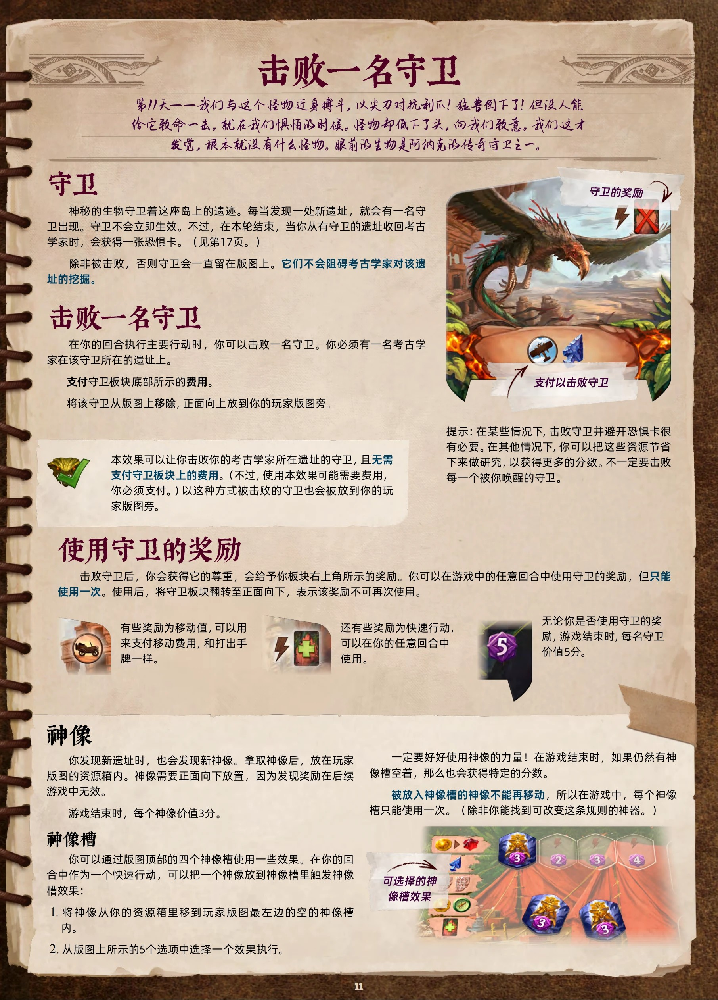
第11天——我们与这个怪物近身搏斗,以尖刀对抗利爪!猛兽倒下了!但没人能给它致命一击。就在我们惧怕的时候,怪物却低下了头,向我们致意。我们这才发觉,根本就没有什么怪物。眼前的生物是阿纳克的传奇守卫之一。
守卫
神秘的生物守卫着这座岛上的遗迹。每当发现一处新遗址,就会有一名守卫出现。守卫不会立即生效。不过,在本轮结束,当你从有守卫的遗址收回考古学家时,会获得一张恐惧卡。(见第17页。)
除非被击败,否则守卫会一直留在版图上。它们不会阻碍考古学家对该遗址的挖掘。
击败一名守卫
在你的回合执行主要行动时,你可以击败一名守卫。你必须有一名考古学家在该守卫所在的遗址上。
- 支付守卫板块底部所示的费用。
- 将该守卫从版图上移除,正面向上放到你的玩家版图旁。
〔图标:守卫奖励效果图标〕本效果可以让你击败你的考古学家所在遗址的守卫,且无需支付守卫板块上的费用。(不过,使用本效果可能需要费用,你必须支付。)以这种方式被击败的守卫也会被放到你的玩家版图旁。
提示:在某些情况下,击败守卫并避开恐惧卡很有必要。在其他情况下,你可以把这些资源节省下来做研究,以获得更多的分数。不一定要击败每一个被你唤醒的守卫。
使用守卫的奖励
击败守卫后,你会获得它的尊重,会给予你板块右上角所示的奖励。你可以在游戏中的任意回合中使用守卫的奖励,但只能使用一次。使用后,将守卫板块翻转至正面向下,表示该奖励不可再次使用。
- 〔图标:圆形移动值图标〕有些奖励为移动值,可以用来支付移动费用,和打出手牌一样。
- 〔图标:闪电与快速行动图标〕还有些奖励为快速行动,可以在你的任意回合中使用。
- 〔图标:数值徽章"5"〕无论你是否使用守卫的奖励,游戏结束时,每名守卫价值5分。
神像
你发现新遗址时,也会发现新神像。拿取神像后,放在玩家版图的资源箱内。神像需要正面向下放置,因为发现奖励在后续游戏中无效。
游戏结束时,每个神像价值3分。
神像槽
你可以通过版图顶部的四个神像槽使用一些效果。在你的回合中作为一个快速行动,可以把一个神像放到神像槽里触发神像槽效果:
- 将神像从你的资源箱里移到玩家版图最左边的空的神像槽内。
- 从版图上所示的5个选项中选择一个效果执行。
一定要好好使用神像的力量!在游戏结束时,如果仍然有神像槽空着,那么也会获得特定的分数。
被放入神像槽的神像不能再移动,所以在游戏中,每个神像槽只能使用一次。(除非你能找到可改变这条规则的神器。)
购买一张卡牌
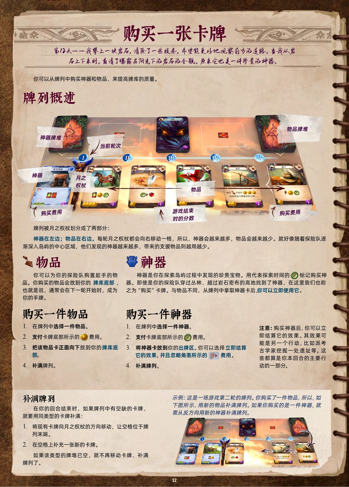
第12天——我攀上一块岩石,清除了一些枝条,希望能更好地观察前方的道路。当我从岩石上下来时,看清了暴露在阳光下的岩石的全貌,原来它也是一件珍贵的神器。
你可以从牌列中购买神器和物品,来提高牌库的质量。
牌列概述
〔图注:牌列布局示意图——神器牌堆与物品牌堆分列两端,轨道上标有罗马数字 Ⅰ–Ⅴ;标注有:当前轮次、神器、月之权杖、物品、购买费用、游戏结束时的分数。〕
牌列被月之权杖划分成了两部分:
神器在左边;物品在右边。每轮月之权杖都会向右移动一格,所以,神器会越来越多,物品会越来越少。就好像随着探险队逐渐深入岛屿的中心区域,他们发现的神器越来越多,带来的支援物品则越来越少。
物品
你可以为你的探险队购置趁手的物品。你购买的物品会放到你的牌库底部,也就是说,通常会在下一轮开始时,成为你的手牌。
神器
神器是你在探索岛屿过程中发现的珍贵宝物。用代表探索时间的〔图标:指南针〕标记购买神器。即使是你的探险队穿过丛林、越过岩石密布的高地找到了神器,在这里我们也称之为"购买"卡牌。与物品不同,从牌列中拿取神器卡后,你可以立即使用它。
购买一件物品
- 在牌列中选择一件物品。
- 支付卡牌底部所示的〔图标:金币〕费用。
- 把该物品卡正面向下放到你的牌库底部。
- 补满牌列。
购买一件神器
- 在牌列中选择一件神器。
- 支付卡牌底部所示的〔图标:指南针〕费用。
- 将神器卡放到你的出牌区。你可以选择立即结算它的效果,并且忽略角落所示的〔图标:石板+箭头〕费用。
- 补满牌列。
注意:购买神器后,你可以立即结算它的效果。其效果可能是另一个行动,比如派考古学家挖掘一处遗址等。这些都算是你本回合的主要行动的一部分。
补满牌列
在你的回合结束时,如果牌列中有空缺的卡牌,就要用同类型的卡牌补满:
- 将现有卡牌向月之权杖的方向移动,让空格位于牌列末端。
- 在空格上补充一张新的卡牌。
如果该类型的牌堆已空,就不再移动卡牌、补满牌列了。
示例:这是一场游戏第二轮的牌列。你购买了一件物品,所以,如下图所示,用新的物品补满牌列。如果你购买的是一件神器,就需从反方向用新的神器补满牌列。
打出一张卡牌
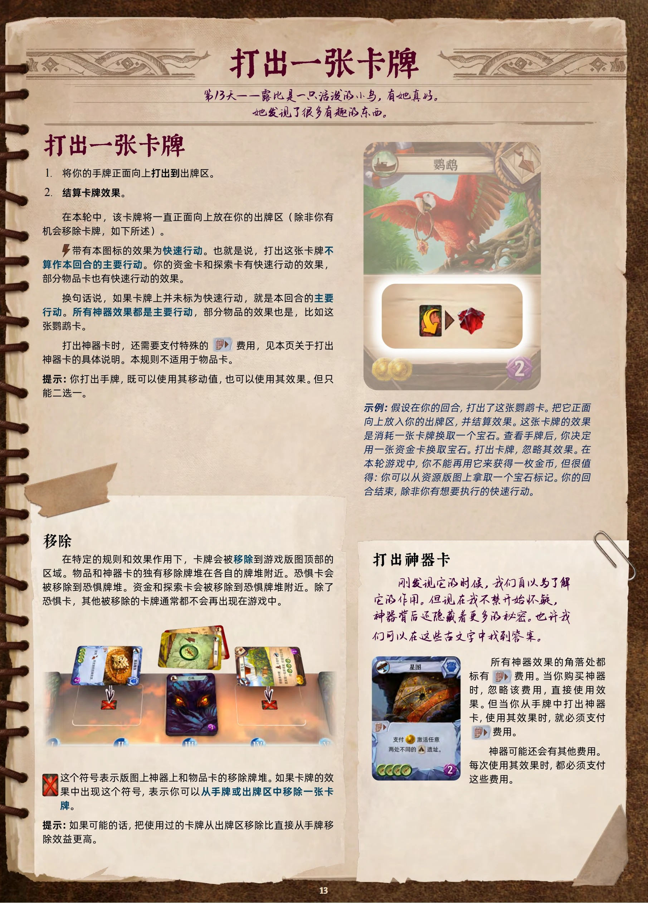
第13天——露比是一只活泼的小鸟,有她真好。她发现了很多有趣的东西。
打出一张卡牌
- 将你的手牌正面向上打出到出牌区。
- 结算卡牌效果。
在本轮中,该卡牌将一直正面向上放在你的出牌区(除非你有机会移除卡牌,如下所述)。
〔图标:闪电〕带有本图标的效果为快速行动。也就是说,打出这张卡牌不算作本回合的主要行动。你的资金卡和探索卡有快速行动的效果,部分物品卡也有快速行动的效果。
换句话说,如果卡牌上并未标为快速行动,就是本回合的主要行动。所有神器效果都是主要行动,部分物品的效果也是,比如这张鹦鹉卡。
打出神器卡时,还需要支付特殊的〔图标:石板与箭头〕费用,见本页关于打出神器卡的具体说明。本规则不适用于物品卡。
提示:你打出手牌,既可以使用其移动值,也可以使用其效果。但只能二选一。
示例:假设在你的回合,打出了这张鹦鹉卡。把它正面向上放入你的出牌区,并结算效果。这张卡牌的效果是消耗一张卡牌换取一个宝石。查看手牌后,你决定用一张资金卡换取宝石。打出卡牌,忽略其效果。在本轮游戏中,你不能再用它来获得一枚金币,但很值得:你可以从资源版图上拿取一个宝石标记。你的回合结束,除非你有想要执行的快速行动。
〔图注:鹦鹉物品卡——效果为〔图标:弃牌箭头〕▶〔图标:宝石〕;左下角两枚金币图标;右下角数值 2。〕
移除
在特定的规则和效果作用下,卡牌会被移除到游戏版图顶部的区域。物品和神器卡的独有移除牌堆在各自的牌堆附近。恐惧卡会被移除到恐惧牌堆。资金和探索卡会被移除到恐惧牌堆附近。除了恐惧卡,其他被移除的卡牌通常都不会再出现在游戏中。
〔图标:红色叉号〕这个符号表示版图上神器卡和物品卡的移除牌堆。如果卡牌的效果中出现这个符号,表示你可以从手牌或出牌区中移除一张卡牌。
提示:如果可能的话,把使用过的卡牌从出牌区移除比直接从手牌移除效益更高。
打出神器卡
刚发现它的时候,我们自以为了解它的作用。但现在我不禁开始怀疑,神器背后还隐藏着更多的秘密。也许我们可以在这些古文字中找到答案。
所有神器效果的角落处都标有〔图标:石板与箭头〕费用。当你购买神器时,忽略该费用,直接使用效果。但当你从手牌中打出神器卡,使用其效果时,就必须支付〔图标:石板与箭头〕费用。
神器可能还会有其他费用。每次使用其效果时,都必须支付这些费用。
研究
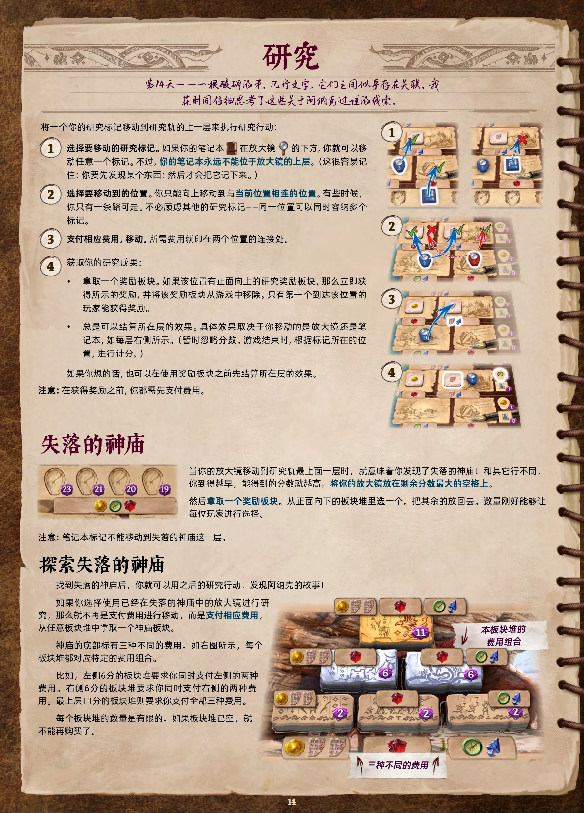
第14天——一根破碎的矛。几行文字。它们之间似乎存在关联。我花时间仔细思考了这些关于阿纳克过往的线索。
将一个你的研究标记移动到研究轨的上一层来执行研究行动:
- 选择要移动的研究标记。如果你的笔记本〔图标:笔记本〕在放大镜〔图标:放大镜〕的下方,你就可以移动任意一个标记。不过,你的笔记本永远不能位于放大镜的上层。(这很容易记住:你要先发现某个东西;然后才会把它记下来。)
- 选择要移动到的位置。你只能向上移动到与当前位置相连的位置。有些时候,你只有一条路可走。不必顾虑其他的研究标记——同一位置可以同时容纳多个标记。
- 支付相应费用,移动。所需费用就印在两个位置的连接处。
- 获取你的研究成果:
- 拿取一个奖励板块。如果该位置有正面向上的研究奖励板块,那么立即获得所示的奖励,并将该奖励板块从游戏中移除。只有第一个到达该位置的玩家能获得奖励。
- 总是可以结算所在层的效果。具体效果取决于你移动的是放大镜还是笔记本,如每层右侧所示。(暂时忽略分数。游戏结束时,根据标记所在的位置,进行计分。)
如果你想的话,也可以在使用奖励板块之前先结算所在层的效果。
注意:在获得奖励之前,你都需先支付费用。
失落的神庙
〔图注:研究轨最上层一行照片:四个神庙空格的分值依次为 23、21、20、19。〕
当你的放大镜移动到研究轨最上面一层时,就意味着你发现了失落的神庙!和其它行不同,你到得越早,能得到的分数就越高。将你的放大镜放在剩余分数最大的空格上。
然后拿取一个奖励板块。从正面向下的板块堆里选一个。把其余的放回去。数量刚好能够让每位玩家进行选择。
注意:笔记本标记不能移动到失落的神庙这一层。
探索失落的神庙
找到失落的神庙后,你就可以用之后的研究行动,发现阿纳克的故事!
如果你选择使用已经在失落的神庙中的放大镜进行研究,那么就不再是支付费用进行移动,而是支付相应费用,从任意板块堆中拿取一个神庙板块。
神庙的底部标有三种不同的费用。如右图所示,每个板块堆都对应特定的费用组合。
比如,左侧6分的板块堆要求你同时支付左侧的两种费用。右侧6分的板块堆要求你同时支付右侧的两种费用。最上层11分的板块堆则要求你支付全部三种费用。
每个板块堆的数量是有限的。如果板块堆已空,就不能再购买了。
你可以移动到哪里?
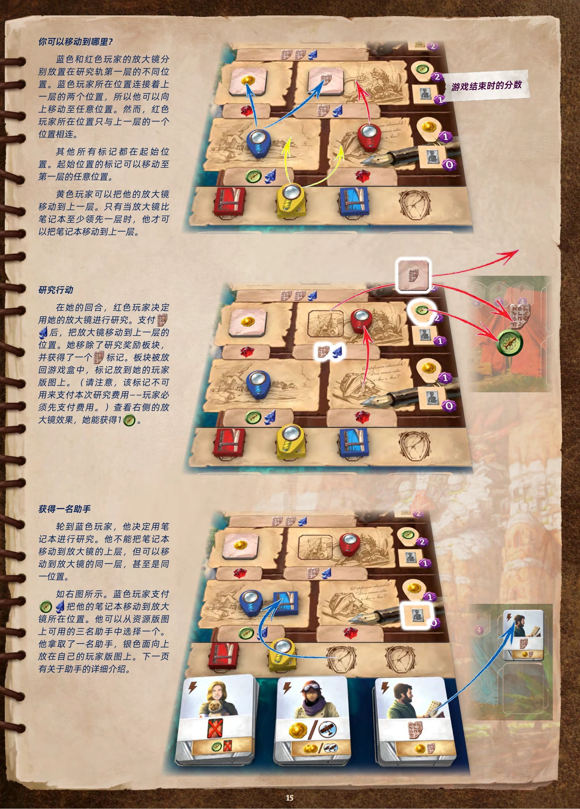
蓝色和红色玩家的放大镜分别放置在研究轨第一层的不同位置。蓝色玩家所在位置连接着上一层的两个位置,所以他可以向上移动至任意位置。然而,红色玩家所在位置只与上层的一个位置相连。
其他所有标记都在起始位置。起始位置的标记可以移动至第一层的任意位置。
黄色玩家可以把他的放大镜移动到上一层。只有当放大镜比笔记本至少领先一层时,他才可以把笔记本移动到上一层。
研究行动
在她的回合,红色玩家决定用她的放大镜进行研究。支付〔图标:石板〕〔图标:箭头〕后,把放大镜移动到上一层的位置。她移除了研究奖励板块,并获得了一个〔图标:石板〕标记。板块被放回游戏盒中,标记放到她的玩家版图上。(请注意,该标记不可用来支付本次研究费用——玩家必须先支付费用。)查看右侧的放大镜效果,她能获得1〔图标:指南针〕。
获得一名助手
轮到蓝色玩家,他决定用笔记本进行研究。他不能把笔记本移动到放大镜的上层,但可以移动到放大镜的同一层,甚至是同一位置。
如右图所示。蓝色玩家支付〔图标:指南针〕〔图标:箭头〕把他的笔记本移动到放大镜所在位置。他可以从资源版图上可用的三名助手中选择一个。他拿取了一名助手,银色面向上放在自己的玩家版图上。下一页有关于助手的详细介绍。
助手
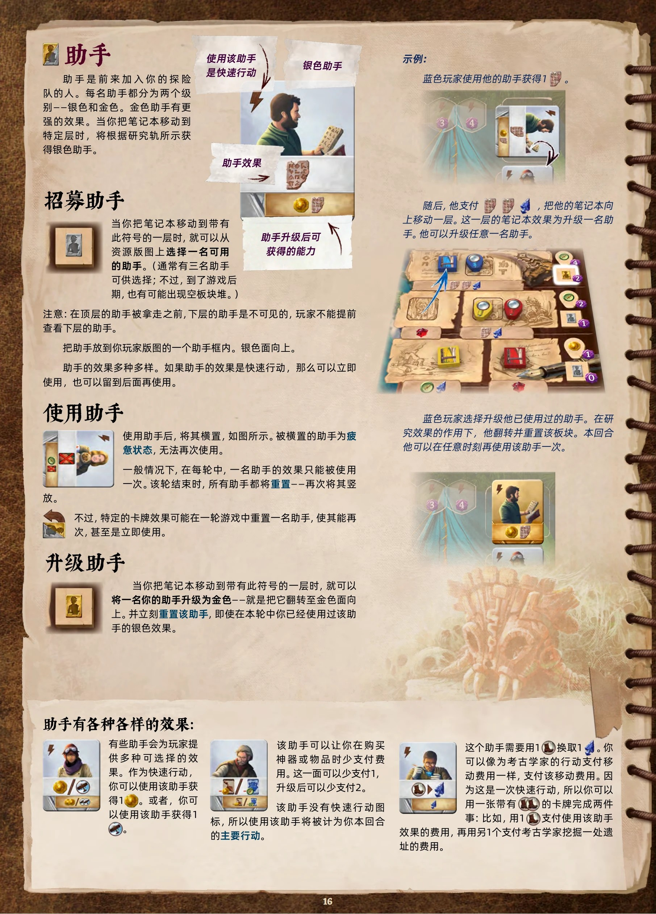
助手是前来加入你的探险队的人。每名助手都分为两个级别——银色和金色。金色助手有更强的效果。当你把笔记本移动到特定层时,将根据研究轨所示获得银色助手。
招募助手
〔图标:银色助手符号〕当你把笔记本移动到带有此符号的一层时,就可以从资源版图上选择一名可用的助手。(通常有三名助手可供选择;不过,到了游戏后期,也有可能出现空板块堆。)
注意:在顶层的助手被拿走之前,下层的助手是不可见的,玩家不能提前查看下层的助手。
把助手放到你玩家版图的一个助手框内。银色面向上。
助手的效果多种多样。如果助手的效果是快速行动,那么可以立即使用,也可以留到后面再使用。
使用助手
使用助手后,将其横置,如图所示。被横置的助手为疲惫状态,无法再次使用。
一般情况下,在每轮中,一名助手的效果只能被使用一次。该轮结束时,所有助手都将重置——再次将其竖放。
〔图标:重置符号〕不过,特定的卡牌效果可能在一轮游戏中重置一名助手,使其能再次,甚至是立即使用。
升级助手
〔图标:金色助手符号〕当你把笔记本移动到带有此符号的一层时,就可以将一名你的助手升级为金色——就是把它翻转至金色面向上。并立刻重置该助手,即使在本轮中你已经使用过该助手的银色效果。
示例:
蓝色玩家使用他的助手获得1〔图标:石板〕。
随后,他支付〔图标:石板×2〕〔图标:箭头〕,把他的笔记本向上移动一层。这一层的笔记本效果为升级一名助手。他可以升级任意一名助手。
蓝色玩家选择升级他已使用过的助手。在研究效果的作用下,他翻转并重置该板块〔原文如此——原书此处即作「该板块」〕。本回合他可以在任意时刻再使用该助手一次。
助手有各种各样的效果:
- 有些助手会为玩家提供多种可选择的效果。作为快速行动,你可以使用该助手获得1〔图标:金币〕。或者,你可以使用该助手获得1〔图标:飞机移动值〕。
- 该助手可以让你在购买神器或物品时少支付费用。这一面可以少支付1,升级后可以少支付2。该助手没有快速行动图标,所以使用该助手将被计为你本回合的主要行动。
- 这个助手需要用1〔图标:靴子〕换取1〔图标:箭头〕。你可以像为考古学家的行动支付移动费用一样,支付该移动费用。因为这是一次快速行动,所以你可以用一张带有〔图标:靴子×2〕的卡牌完成两件事:比如,用1〔图标:靴子〕支付使用该助手效果的费用,再用另1个支付考古学家挖掘一处遗址的费用。
跳过与下一轮的设置
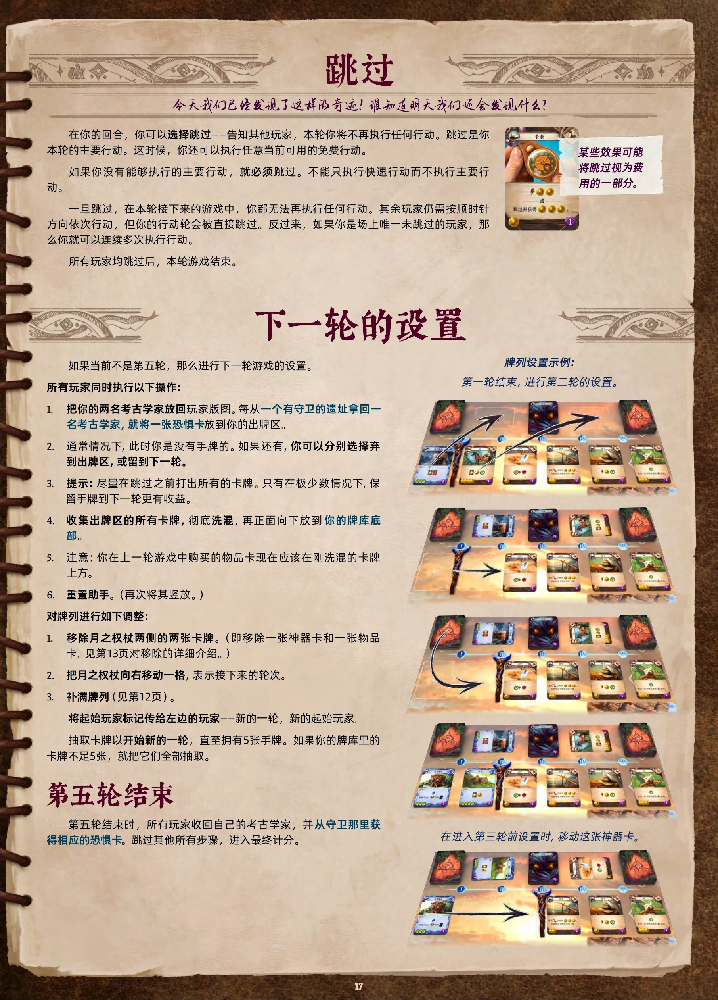
跳过
今天我们已经发现了这样的奇迹!谁知道明天我们还会发现什么?
在你的回合,你可以选择跳过——告知其他玩家,本轮你将不再执行任何行动。跳过是你本轮的主要行动。这时候,你还可以执行任意当前可用的免费行动。
如果你没有能够执行的主要行动,就必须跳过。不能只执行快速行动而不执行主要行动。
一旦跳过,在本轮接下来的游戏中,你都无法再执行任何行动。其余玩家仍需按顺时针方向依次行动,但你的行动轮会被直接跳过。反过来,如果你是场上唯一未跳过的玩家,那你就可以连续多次执行行动。
所有玩家均跳过后,本轮游戏结束。
某些效果可能将跳过视为费用的一部分。
〔图注:配图为物品卡"手表",卡面文字为:〔闪电〕〔金币〕〔金币〕,或,"跳过并获得〔金币〕〔金币〕〔金币〕。"〕
下一轮的设置
如果当前不是第五轮,那么进行下一轮游戏的设置。
〔图注:右栏为"牌列设置示例"照片组——第一轮结束,进行第二轮的设置;月之权杖随轮次右移,黑色箭头指示卡牌的移除与移动;并印有图注"在进入第三轮前设置时,移动这张神器卡。"〕
所有玩家同时执行以下操作:
- 把你的两名考古学家放回玩家版图。每从一个有守卫的遗址拿回一名考古学家,就将一张恐惧卡放到你的出牌区。
- 通常情况下,此时你是没有手牌的。如果还有,你可以分别选择弃到出牌区,或留到下一轮。
- 提示:尽量在跳过之前打出所有的卡牌。只有在极少数情况下,保留手牌到下一轮更有收益。
- 收集出牌区的所有卡牌,彻底洗混,再正面向下放到你的牌库底部。
- 注意:你在上一轮游戏中购买的物品卡现在应该在刚洗混的卡牌上方。
- 重置助手。(再次将其竖放。)
对牌列进行如下调整:
- 移除月之权杖两侧的两张卡牌。(即移除一张神器卡和一张物品卡。见第13页对移除的详细介绍。)
- 把月之权杖向右移动一格,表示接下来的轮次。
- 补满牌列(见第12页)。
将起始玩家标记传给左边的玩家——新的一轮,新的起始玩家。
抽取卡牌以开始新的一轮,直至拥有5张手牌。如果你的牌库里的卡牌不足5张,就把它们全部抽取。
第五轮结束
第五轮结束时,所有玩家收回自己的考古学家,并从守卫那里获得相应的恐惧卡。跳过其他所有步骤,进入最终计分。
蛇之神庙
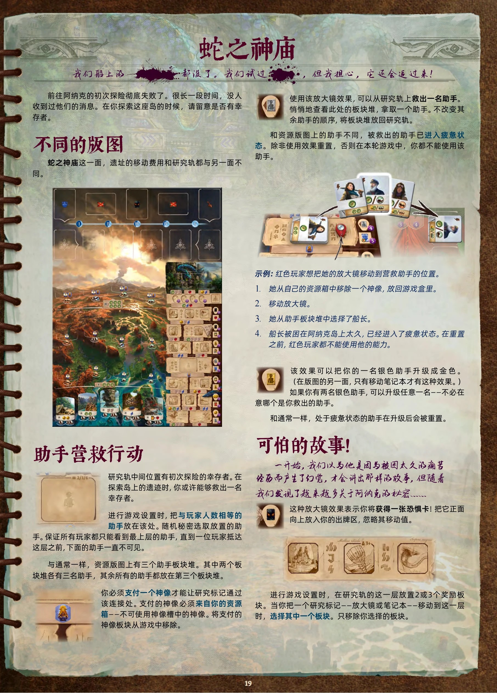
我们船上的〔墨迹涂黑,原文不可见〕都没了。我们试过〔墨迹涂黑,原文不可见〕,但我担心,它还会追过来!
前往阿纳克的初次探险彻底失败了。很长一段时间,没人收到过他们的消息。在你探索这座岛的时候,请留意是否有幸存者。
不同的版图
蛇之神庙这一面,遗址的移动费用和研究轨都与另一面不同。
助手营救行动
研究轨中间位置有初次探险的幸存者。在探索岛上的遗迹时,你或许能够救出一名幸存者。
进行游戏设置时,把与玩家人数相等的助手放在该处。随机秘密选取放置的助手。保证所有玩家都只能看到最上层的助手,直到一位玩家抵达这层之前,下面的助手一直不可见。
与通常一样,资源版图上有三个助手板块堆。其中两个板块堆各有三名助手,其余所有的助手都放在第三个板块堆。
你必须支付一个神像才能让研究标记通过该连接处。支付的神像必须来自你的资源箱——不可使用神像槽中的神像。将支付的神像板块从游戏中移除。
〔图标:救出助手放大镜效果〕使用该放大镜效果,可以从研究轨上救出一名助手。悄悄地查看此处的板块堆,拿取一个助手。不改变其余助手的顺序,将板块堆放回研究轨。
和资源版图上的助手不同,被救出的助手已进入疲惫状态。除非使用效果重置,否则在本轮游戏中,你都不能使用该助手。
示例:红色玩家想把她的放大镜移动到营救助手的位置。
- 她从自己的资源箱中移除一个神像,放回游戏盒里。
- 移动放大镜。
- 她从助手板块堆中选择了船长。
- 船长被困在阿纳克岛上太久,已经进入了疲惫状态。在重置之前,红色玩家都不能使用他的能力。
〔图标:升级放大镜效果〕该效果可以把你的一名银色助手升级成金色。(在版图的另一面,只有移动笔记本才有这种效果。)如果你有两名银色助手,可以升级任意一名——不必在意哪个是你救出的助手。
和通常一样,处于疲惫状态的助手在升级后会被重置。
可怕的故事!
一开始,我们以为他是因为被困太久的痛苦经历而产生了幻觉,才会讲出那样的故事,但随着我们发现了越来越多关于阿纳克的秘密……
〔图标:恐惧卡放大镜效果〕这种放大镜效果表示你将获得一张恐惧卡!把它正面向上放入你的出牌区,忽略其移动值。
进行游戏设置时,在研究轨的这一层放置2或3个奖励板块。当你把一个研究标记——放大镜或笔记本——移动到这一层时,选择其中一个板块。只移除你选择的板块。
单人游戏
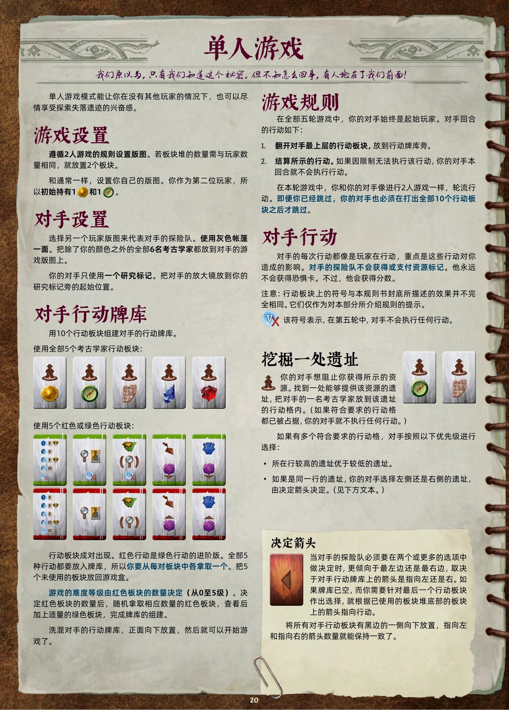
我们原以为,只有我们知道这个秘密。但不知怎么回事,有人抢在了我们前面!
单人游戏模式能让你在没有其他玩家的情况下,也可以尽情享受探索失落遗迹的兴奋感。
游戏设置
遵循2人游戏的规则设置版图。若板块堆的数量需与玩家数量相同,就放置2个板块。
和通常一样,设置你自己的版图。你作为第二位玩家,所以初始持有1〔图标:金币〕和1〔图标:指南针〕。
对手设置
选择另一个玩家版图来代表对手的探险队。使用灰色帐篷一面。把除了你的颜色之外的全部6名考古学家都放到对手的游戏版图上。
你的对手只使用一个研究标记。把对手的放大镜放到你的研究标记旁的起始位置。
对手行动牌库
用10个行动板块组建对手的行动牌库。
使用全部5个考古学家行动板块:
〔图注:5个白色行动板块,上方均为戴帽考古学家人偶图标,下方依次为〔金币〕〔指南针〕〔石板〕〔箭头〕〔宝石〕。〕
使用5个红色或绿色行动板块:
〔图注:10个行动板块分两排,上排为绿色边框(绿色行动),下排为红色边框(红色行动),上下成对对应。〕
行动板块成对出现。红色行动是绿色行动的进阶版。全部5种行动都要放入牌库,所以你要从每对板块中各拿取一个。把5个未使用的板块放回游戏盒。
游戏的难度等级由红色板块的数量决定(从0至5级)。决定红色板块的数量后,随机拿取相应数量的红色板块,查看后加上适量的绿色板块,完成牌库的组建。
洗混对手的行动牌库,正面向下放置,然后就可以开始游戏了。
游戏规则
在全部五轮游戏中,你的对手始终是起始玩家。对手回合的行动如下:
- 翻开对手最上层的行动板块,放到行动牌库旁。
- 结算所示的行动。如果因限制无法执行该行动,你的对手本回合就不会执行行动。
在本轮游戏中,你和你的对手像进行2人游戏一样,轮流行动。即便你已经跳过,你的对手也必须在打出全部10个行动板块之后才跳过。
对手行动
对手的每次行动都像是玩家在行动,重点是这些行动对你造成的影响。对手的探险队不会获得或支付资源标记。他永远不会获得恐惧卡。不过,他会获得分数。
注意:行动板块上的符号与本规则书封底所描述的效果并不完全相同。它们仅作为对本部分所介绍规则的提示。
〔图标:带红叉的V〕该符号表示,在第五轮中,对手不会执行任何行动。
挖掘一处遗址
〔图标:考古学家人偶〕你的对手想阻止你获得所示的资源。找到一处能够提供该资源的遗址,把对手的一名考古学家放到该遗址的行动格内。(如果符合要求的行动格都已被占据,你的对手就不执行任何行动。)
如果有多个符合要求的行动格,对手按照以下优先级进行选择:
- 所在行较高的遗址优于较低的遗址。
- 如果是同一行的遗址,你的对手选择左侧还是右侧的遗址,由决定箭头决定。(见下方文本。)
决定箭头
〔图标:决定箭头〕当对手的探险队必须要在两个或更多的选项中做决定时,更倾向于最左边还是最右边,取决于对手行动牌库上的箭头是指向左还是右。如果牌库已空,而你需要针对最后一个行动板块作出选择,就根据已使用的板块堆底部的板块上的箭头指向行动。
将所有对手行动板块有黑边的一侧向下放置,指向左和指向右的箭头数量就能保持一致了。
发现一处新遗址
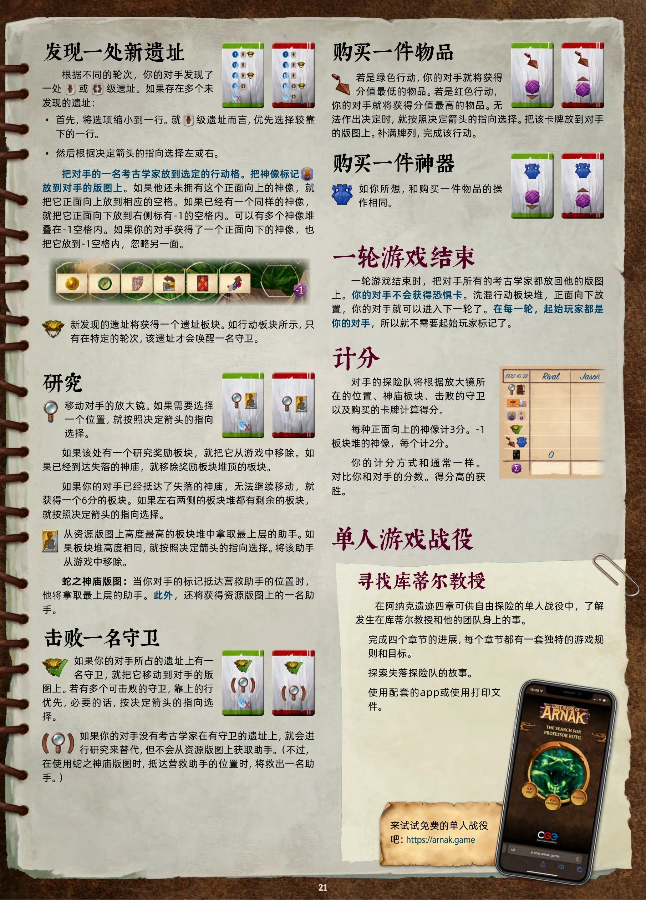
根据不同的轮次,你的对手发现了一处〔图标:1级标志〕或〔图标:2级标志〕级遗址。如果存在多个未发现的遗址:
- 首先,将选项缩小到一行。就〔图标:1级标志〕级遗址而言,优先选择较靠下的一行。
- 然后根据决定箭头的指向选择左或右。
把对手的一名考古学家放到选定的行动格。把神像标记〔图标:神像〕放到对手的版图上。如果他还未拥有这个正面向上的神像,就把它正面向上放到相应的空格。如果已经有一个同样的神像,就把它正面向下放到右侧标有-1的空格内。可以有多个神像堆叠在-1空格内。如果你的对手获得了一个正面向下的神像,也把它放到-1空格内,忽略另一面。
〔图标:金色蛇头〕新发现的遗址将获得一个遗址板块。如行动板块所示,只有在特定的轮次,该遗址才会唤醒一名守卫。
研究
〔图标:放大镜〕移动对手的放大镜。如果需要选择一个位置,就按照决定箭头的指向选择。
如果该处有一个研究奖励板块,就把它从游戏中移除。如果已经到达失落的神庙,就移除奖励板块堆顶的板块。
如果你的对手已经抵达了失落的神庙,无法继续移动,就获得一个6分的板块。如果左右两侧的板块堆都有剩余的板块,就按照决定箭头的指向选择。
〔图标:助手卡〕从资源版图上高度最高的板块堆中拿取最上层的助手。如果板块堆高度相同,就按照决定箭头的指向选择。将该助手从游戏中移除。
蛇之神庙版图:当你对手的标记抵达营救助手的位置时,他将拿取最上层的助手。此外,还将获得资源版图上的一名助手。
击败一名守卫
〔图标:金色蛇头加绿色对勾〕如果你的对手所占的遗址上有一名守卫,就把它移动到对手的版图上。若有多个可击败的守卫,靠上的行优先,必要的话,按决定箭头的指向选择。
〔图标:括号中的放大镜〕如果你的对手没有考古学家在有守卫的遗址上,就会进行研究来替代,但不会从资源版图上获取助手。(不过,在使用蛇之神庙版图时,抵达营救助手的位置时,将救出一名助手。)
购买一件物品
〔图标:铲子〕若是绿色行动,你的对手就将获得分值最低的物品。若是红色行动,你的对手就将获得分值最高的物品。无法作出决定时,就按照决定箭头的指向选择。把该卡牌放到对手的版图上。补满牌列,完成该行动。
购买一件神器
〔图标:蓝色神器〕如你所想,和购买一件物品的操作相同。
一轮游戏结束
一轮游戏结束时,把对手所有的考古学家都放回他的版图上。你的对手不会获得恐惧卡。洗混行动板块堆,正面向下放置,你的对手就可以进入下一轮了。在每一轮,起始玩家都是你的对手,所以就不需要起始玩家标记了。
计分
对手的探险队将根据放大镜所在的位置、神庙板块、击败的守卫以及购买的卡牌计算得分。
每种正面向上的神像计3分。-1板块堆的神像,每个计2分。
你的计分方式和通常一样。对比你和对手的分数。得分高的获胜。
单人游戏战役:寻找库蒂尔教授
在阿纳克遗迹四章可供自由探险的单人战役中,了解发生在库蒂尔教授和他的团队身上的事。
- 完成四个章节的进展,每个章节都有一套独特的游戏规则和目标。
- 探索失落探险队的故事。
- 使用配套的app或使用打印文件。
来试试免费的单独战役吧:https://arnak.game 〔手机端界面显示 THE SEARCH FOR PROFESSOR KUTIL,地址 solo.arnak.game〕
附录:部分卡牌注意事项
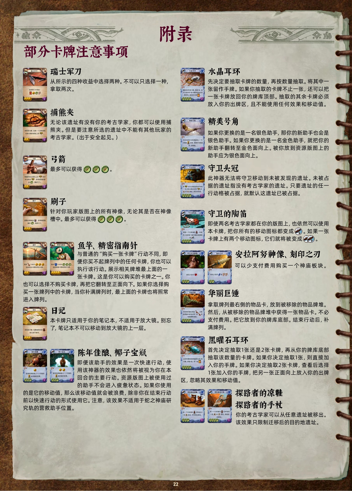
瑞士军刀
从所示的四种收益中选择两种。不可以只选择一种,拿取两次。
捕熊夹
无论该遗址有没有你的考古学家,你都可以使用捕熊夹。但是要注意所选的遗址中不能有其他玩家的考古学家。(出于安全起见。)
弓箭
最多可以获得〔图标:指南针×3〕。
刷子
针对你玩家版图上的所有神像,无论其是否在神像槽中。最多可以获得〔图标:指南针×3〕。
鱼竿、精密指南针
与普通的"购买一张卡牌"行动不同,即便你买不起牌列中的任何卡牌,你也可以执行该行动。展示相关牌堆最上面的一张卡牌。这是你可以购买的卡牌之一。你也可以选择不购买卡牌,再把它翻转至正面向下。如果你选择购买一张牌列中的卡牌,当你补满牌列时,最上面的卡牌也将照常进入牌列。
日记
本卡牌只适用于你的笔记本,不适用于放大镜。别忘了,笔记本不可以移动到放大镜的上一层。
陈年佳酿、椰子宝瓶
即便该助手的效果是一次快速行动,使用该神器的效果也依然将被视为你在本回合的主要行动。资源版图上被使用过的助手不会进入疲惫状态。如果你使用的是它的移动值,那么该移动值就会被浪费,除非你在结束行动前以快速行动的形式使用它。注意,该效果不适用于蛇之神庙研究轨的营救助手位置。
水晶耳环
先决定要抽取卡牌的数量,再按数量抽取。将其中一张留作手牌。如果你抽取的卡牌不止一张,还可以把一张卡牌放回你的牌库顶部。抽取的其余卡牌必须放入你的出牌区,且不能使用任何效果和移动值。
精美号角
如果你更换的是一名银色助手,那你的新助手也会是银色助手。如果你更换的是一名金色助手,就把你的新助手翻转至金色面向上。被你放到资源版图上的助手应为银色面向上。
守卫头冠
此神器无法将守卫移动到未被发现的遗址。未被占据的遗址指没有考古学家的遗址。只要遗址的任一行动格被占据,就默认这遗址已被占据。
守卫的陶笛
即使两名考古学家都在你的版图上,也依然可以使用本卡牌,把你所有的移动图标都变成〔图标:船〕。如果一张卡牌上有两个移动图标,它们就将被变成〔图标:船×2〕。
安拉阿努神像、刻印之刃
可以少支付费用购买一个神庙板块。
华丽巨锤
拿取牌列最右侧的物品卡,放到被移除的物品牌堆。然后,从被移除的物品牌堆中获得一张物品卡。不必支付费用。把它放到你的牌库底部。结束行动后,补满牌列。
黑曜石耳环
首先决定抽取1张还是2张卡牌,再从你的牌库底部抽取该数量的卡牌。如果你决定抽取1张,则直接加入你的手牌。如果你决定抽取2张卡牌,查看后选择1张加入你的手牌,把另一张正面向上放入你的出牌区,忽略其效果和移动值。
探路者的凉鞋、探路者的手杖
你的考古学家可以从任意遗址被移出。该效果只限制迁移后的目的地遗址。
别忘了!与常见问题解答
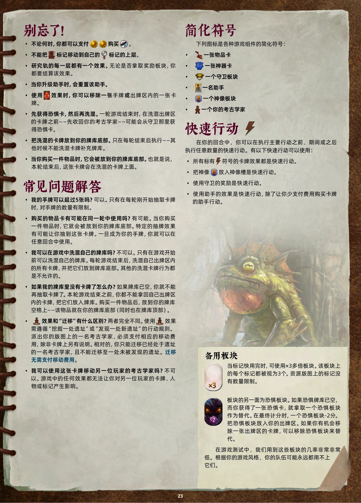
别忘了!
- 不论何时,你都可以支付〔图标:金币×2〕购买〔图标:放大镜〕。
- 不能把〔图标:深色方形标记〕标记移动到自己的〔图标:圆形标记〕标记的上层。
- 研究轨的每一层都有一个效果。无论是否拿取奖励板块,你都要结算该效果。
- 当你升级助手时,会重置该助手。
- 使用〔图标:移除符号〕效果时,你可以移除一张手牌或出牌区内的一张卡牌。
- 先获得恐惧卡,然后再洗混。一轮游戏结束时,在洗混出牌区的卡牌之前——先收回你的考古学家——可能会从守卫那里获得恐惧卡。
- 把洗混的卡牌放到你的牌库底部。只在每轮结束后执行——其他时候不能洗混卡牌补充牌库。
- 当你购买一件物品时,它会被放到你的牌库底部。也就是说,本轮结束后,这张卡牌会在洗混的卡牌上面。
常见问题解答
- 我的手牌可以超过5张吗?可以。只有在每轮刚开始抽取卡牌时,对手牌的数量有限制。
- 购买的物品卡有可能在同一轮中使用吗?有可能。当你购买一件物品时,它就会被放到你的牌库底部。特定的抽牌效果有可能让你抽到这张卡牌。一旦成为你的手牌,你就可以在任意回合中使用。
- 我可以在游戏中洗混自己的牌库吗?不可以。只有在游戏开始前可以洗混自己的牌库。每轮游戏结束后,洗混自己出牌区内的所有卡牌,并把它们放到牌库底部。其他的洗混卡牌行为都是不允许的。
- 如果我的牌库里没有卡牌了怎么办?如果牌库已空,你就不能再抽取卡牌了。本轮游戏结束之前,你都不能拿回自己出牌区内的卡牌,把它们放入牌库。购买一件物品后,放到你的牌库空格上——该物品就在你的牌库底部(同时也在牌库顶部)。
- 〔图标:神像〕效果和"迁移"有什么区别?两者完全不同。使用〔图标:神像〕效果需遵循"挖掘一处遗址"或"发现一处遗址"的行动规则,派出你的版图上的一名考古学家,必须支付相应的移动费用,除非卡牌上另有说明。相对的,你只能迁移已经处于遗址的一名考古学家,且不能迁移至一处未被发现的遗址。迁移无需支付移动费用。
- 我可以使用这张卡牌移动另一位玩家的考古学家吗?不可以。游戏中的任何效果都无法让你对另一位玩家的卡牌、人物或标记产生影响。
简化符号
下列图标是各种游戏组件的简化符号:
- 〔图标:红色蛇形图案〕一张物品卡
- 〔图标:蓝色面具图案〕一张神器卡
- 〔图标:金色守卫头像图案〕一个守卫板块
- 〔图标:助手小人图案〕一名助手
- 〔图标:金色神像图案〕一个神像板块
- 〔图标:戴帽子的考古学家小人图案〕一个你的考古学家
快速行动〔图标:闪电〕
在你的回合中,你可以在执行主要行动之前、期间或之后执行任意数量的快速行动。有以下快速行动可以使用:
- 所有标有〔图标:闪电〕符号的卡牌效果都是快速行动。
- 把神像〔图标:神像〕放入神像槽是快速行动。
- 使用守卫的奖励是快速行动。
- 使用助手的效果是快速行动,除了让你少支付费用购买卡牌的助手行动。
备用板块
〔图标:×3板块〕当标记快用完时,可使用×3多倍板块。该板块上的每个标记都被视为3个。资源版图上的标记没有数量限制。
〔图标:恐惧板块〕板块的另一面为恐惧板块。如果恐惧牌库已空,而你获得了一张恐惧卡,就拿取一个恐惧板块作为替代。在最终计分时,一个恐惧板块-2分。把恐惧板块放入你的出牌区。如果你有机会移除一张出牌区的卡牌,可以移除恐惧板块来替代。
在游戏测试中,我们用到这些板块的几率非常非常低。根据你的游戏风格,你的队伍可能永远都用不上它们。
封底速查
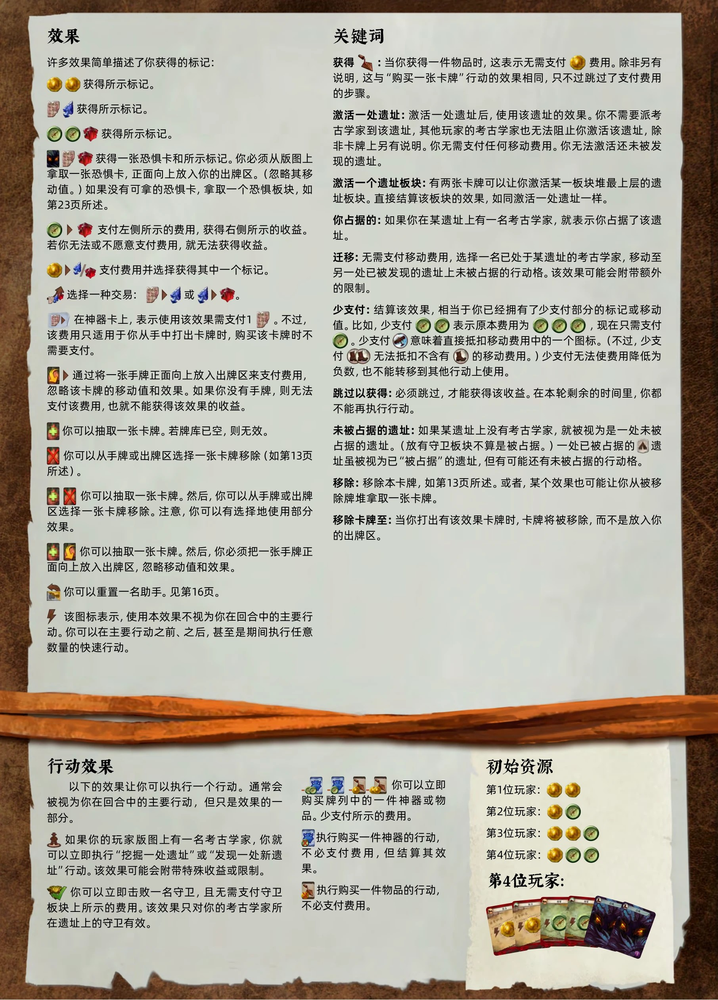
效果
许多效果简单描述了你获得的标记:
- 〔图标:金币×2〕获得所示标记。
- 〔图标:石板、箭头〕获得所示标记。
- 〔图标:指南针×2、宝石〕获得所示标记。
- 〔图标:恐惧卡、石板、宝石〕获得一张恐惧卡和所示标记。你必须从版图上拿取一张恐惧卡,正面向上放入你的出牌区。(忽略其移动值。)如果没有可拿的恐惧卡,拿取一个恐惧板块,如第23页所述。
- 〔图标:指南针 ▶ 宝石〕支付左侧所示的费用,获得右侧所示的收益。若你无法或不愿意支付费用,就无法获得收益。
- 〔图标:金币 ▶ 箭头/宝石〕支付费用并选择获得其中一个标记。
- 〔图标:交易符号〕选择一种交易:〔图标:石板 ▶ 箭头〕或〔图标:箭头 ▶ 宝石〕。
- 〔图标:神器卡费用符号〕在神器卡上,表示使用该效果需支付1〔图标:石板〕。不过,该费用只适用于你从手中打出卡牌时,购买该卡牌时不需要支付。
- 〔图标:出牌支付符号〕通过将一张手牌正面向上放入出牌区来支付费用,忽略该卡牌的移动值和效果。如果你没有手牌,则无法支付该费用,也就不能获得该效果的收益。
- 〔图标:抽卡符号〕你可以抽取一张卡牌。若牌库已空,则无效。
- 〔图标:移除符号〕你可以从手牌或出牌区选择一张卡牌移除(如第13页所述)。
- 〔图标:抽卡+移除符号〕你可以抽取一张卡牌。然后,你可以从手牌或出牌区选择一张卡牌移除。注意,你可以有选择地使用部分效果。
- 〔图标:抽卡+出牌符号〕你可以抽取一张卡牌。然后,你必须把一张手牌正面向上放入出牌区,忽略移动值和效果。
- 〔图标:重置符号〕你可以重置一名助手。见第16页。
- 〔图标:闪电〕该图标表示,使用本效果不视为你在回合中的主要行动。你可以在主要行动之前、之后,甚至是期间执行任意数量的快速行动。
关键词
- 获得〔图标:铲子〕:当你获得一件物品时,这表示无需支付〔图标:金币〕费用。除非另有说明,这与"购买一张卡牌"行动的效果相同,只不过跳过了支付费用的步骤。
- 激活一处遗址:激活一处遗址后,使用该遗址的效果。你不需要派考古学家到该遗址,其他玩家的考古学家也无法阻止你激活该遗址,除非卡牌上另有说明。你无需支付任何移动费用。你无法激活还未被发现的遗址。
- 激活一个遗址板块:有两张卡牌可以让你激活某一板块堆最上层的遗址板块。直接结算该板块的效果,如同激活一处遗址一样。
- 你占据的:如果你在某遗址上有一名考古学家,就表示你占据了该遗址。
- 迁移:无需支付移动费用,选择一名已处于某遗址的考古学家,移动至另一处已被发现的遗址上未被占据的行动格。该效果可能会附带额外的限制。
- 少支付:结算该效果,相当于你已经拥有了少支付部分的标记或移动值。比如,少支付〔图标:指南针×2〕表示原本费用为〔图标:指南针×3〕,现在只需支付〔图标:指南针×1〕。少支付〔图标:飞机〕意味着直接抵扣移动费用中的一个图标。(不过,少支付〔图标:靴子〕无法抵扣不含有〔图标:靴子〕的移动费用。)少支付无法使费用降低为负数,也不能转移到其他行动上使用。
- 跳过以获得:必须跳过,才能获得该收益。在本轮剩余的时间里,你都不能再执行行动。
- 未被占据的遗址:如果某遗址上没有考古学家,就被视为是一处未被占据的遗址。(放有守卫板块不算是被占据。)一处已被占据的〔图标:遗址标记〕遗址虽被视为已"被占据"的遗址,但有可能还有未被占据的行动格。
- 移除:移除本卡牌,如第13页所述。或者,某个效果也可能让你从被移除牌堆拿取一张卡牌。
- 移除卡牌至:当你打出有该效果卡牌时,卡牌将被移除,而不是放入你的出牌区。
行动效果
以下的效果让你可以执行一个行动。通常会被视为你在回合中的主要行动,但只是效果的一部分。
- 〔图标:考古学家〕如果你的玩家版图上有一名考古学家,你就可以立即执行"挖掘一处遗址"或"发现一处新遗址"行动。该效果可能会附带特殊收益或限制。
- 〔图标:守卫与对勾〕你可以立即击败一名守卫,且无需支付守卫板块上所示的费用。该效果只对你的考古学家所在遗址上的守卫有效。
- 〔图标:折扣符号组〕你可以立即购买牌列中的一件神器或物品。少支付所示的费用。
- 〔图标:神器与红叉〕执行购买一件神器的行动,不必支付费用,但结算其效果。
- 〔图标:物品与红叉〕执行购买一件物品的行动,不必支付费用。
初始资源
- 第1位玩家:〔金币×2〕
- 第2位玩家:〔金币×1、指南针×1〕
- 第3位玩家:〔金币×2、指南针×1〕
- 第4位玩家:〔金币×1、指南针×2〕
第4位玩家:另获得六张起始卡牌〔图:两张物品卡、两张神器卡、两张恐惧卡〕。